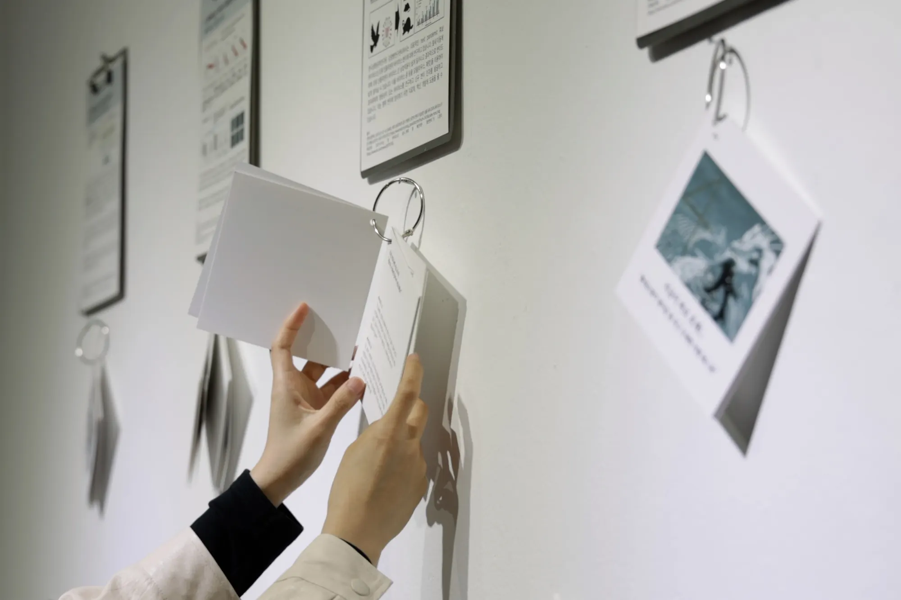
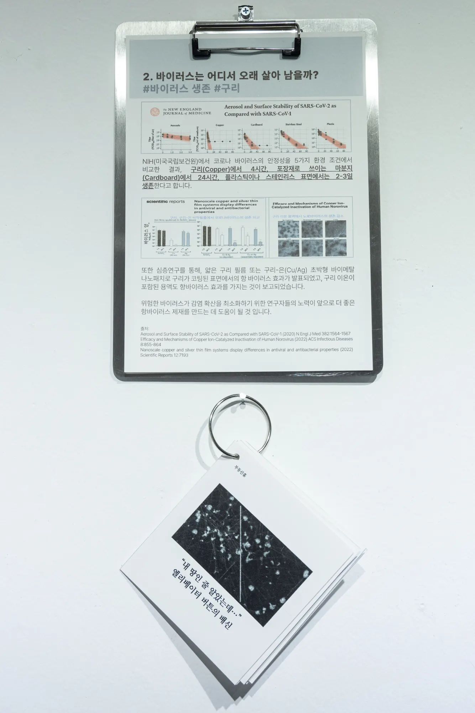
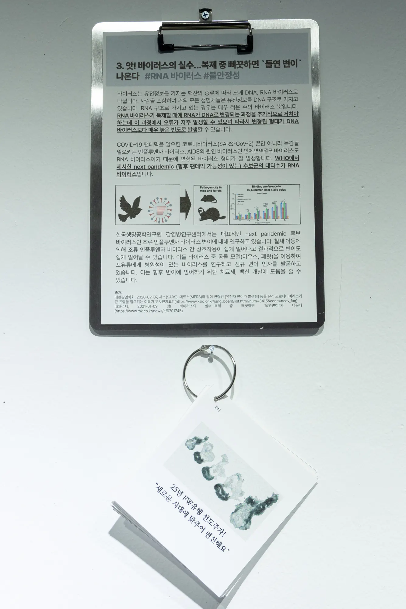

Viruses and Their Desires
Narrative installation, 2024
- Shown at
- Artience Daejeon 2024, Daejeon Culture and Arts Foundation × KRIBB, Daejeon, 2024.10
- Materials
- 9 speculative multi-agent narratives, AI-generated text (ChatGPT), diagrams and drawings, variable dimensions
- In collaboration with
- Dr. Jihyun Yang (KRIBB)
Nine speculative short-form narratives operating as a multi-voiced narrative system in a dialogic, speaker-labelled format. Structured as an internet-article–based ecosystem, these texts form a conceptual framework for real-time digital interaction. Developed with KRIBB and AI, they function as a bridge between speculative fiction and the Infected Desires installation.
Each entry is constructed as a multi-agent narrative in which non-human voices co-produce discourse through a structured utterance system. Rather than traditional storytelling, the work operates as a narrative interface where scientific observation merges with fictional imagination, producing a hybrid language of virology and speculative discourse.
Within this framework, desire becomes a mode of survival and perception: just as humans construct “safe assets” through concepts like secure real estate investment, viruses—prior to the emergence of COVID-19 antimicrobial films—perceived surfaces such as elevator buttons as stable nodes of transmission, akin to ecological safe zones.
At the end of each narrative, the trajectory of desire is documented through diagrammatic graphs and hand-drawn scribbles.


